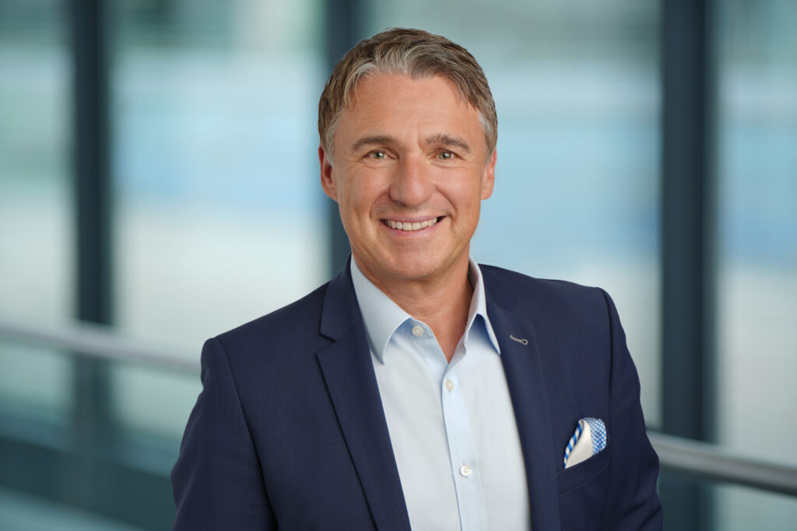
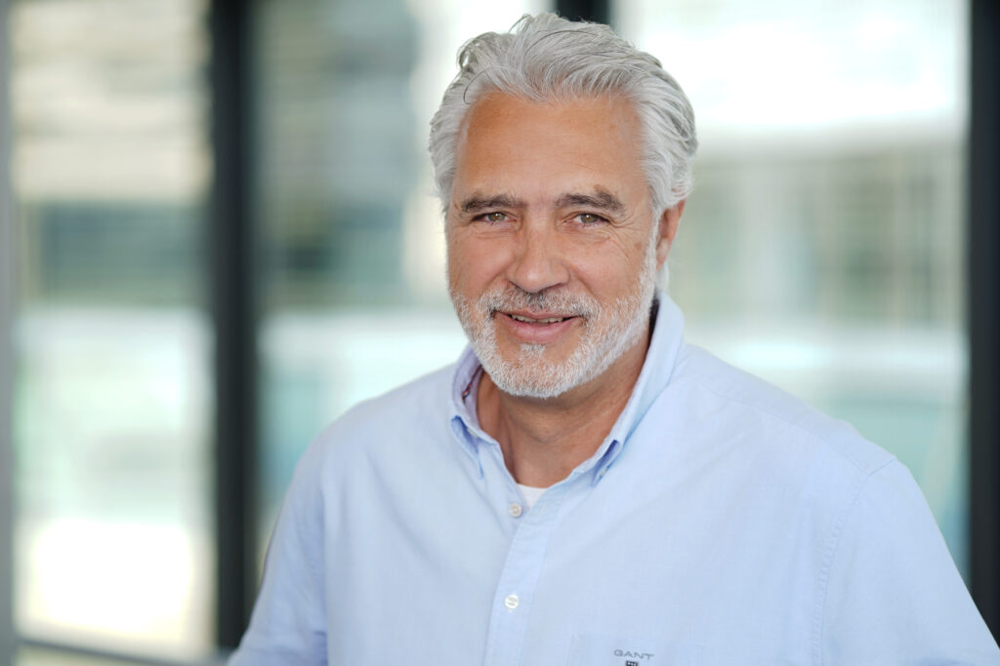
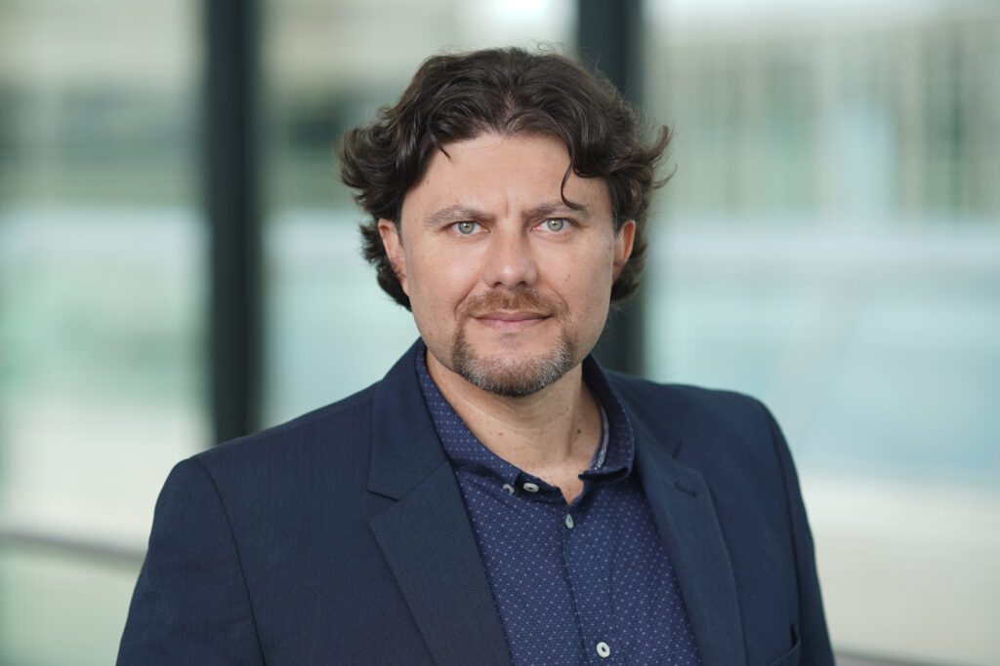
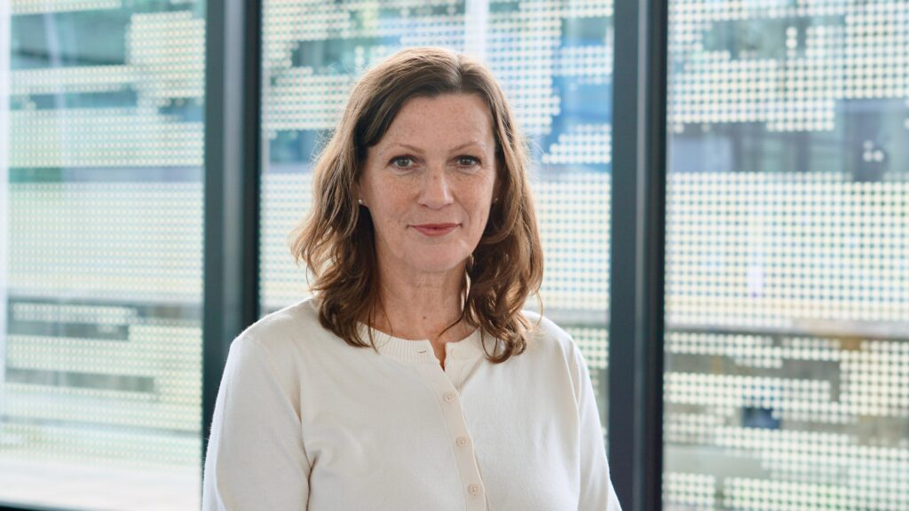

Direkt erreichbar
Sprich mit uns.
Ob erste Idee, Forschungsergebnis, Start-up oder Partnerschaft: Melde dich über den Weg, der für dich am einfachsten ist.
Persönliche Ansprechpartner:innen
Das HIGHEST Team.
Hinter jedem Thema stehen Menschen mit unterschiedlichen Schwerpunkten. Wähle eine Person, um das vollständige Profil zu öffnen.

LeitungHarald HolzerGeschäftsführer HIGHESTProfil öffnen ↗ Innovation- & Start-up ConsultingGudrun LantelmeLeitung Innovation- & Start-up ConsultingProfil öffnen ↗
Innovation- & Start-up ConsultingSacha BuytaertInnovation & Start-up ConsultantProfil öffnen ↗ Innovation- & Start-up ConsultingCherilyn HehlInnovation & Start-up ConsultantProfil öffnen ↗ Innovation- & Start-up ConsultingSimone LühlInnovation & Start-up ConsultantProfil öffnen ↗ Innovation- & Start-up ConsultingDominique TandlInnovation & Start-up ConsultantProfil öffnen ↗
Innovation- & Start-up ConsultingPhillip TraversInnovation & Start-up ConsultantProfil öffnen ↗ Kommunikation / MarketingDr. Claudia BeckerLeitung Marketing und KommunikationProfil öffnen ↗ Community ServicesSabine RemmertLeitung Community Services & RessourcesProfil öffnen ↗ Community ServicesKatja BorowskiInnovations & Start-up ConsultantProfil öffnen ↗ Community ServicesCarola Heyn-BenediktInnovationsmanagerinProfil öffnen ↗ Community ServicesMaren HofmannProjekt- und Stakeholder ManagementProfil öffnen ↗ Community ServicesJessica RetzlaffInnovationsmanagerinProfil öffnen ↗ Community ServicesDiana RippAdministrationProfil öffnen ↗ IP ServicesSusanne GürichLeitung IP ServicesProfil öffnen ↗ IP ServicesVanessa ArmbrusterIP-ManagementProfil öffnen ↗
IP ServicesChristine HitzelAdministrationProfil öffnen ↗